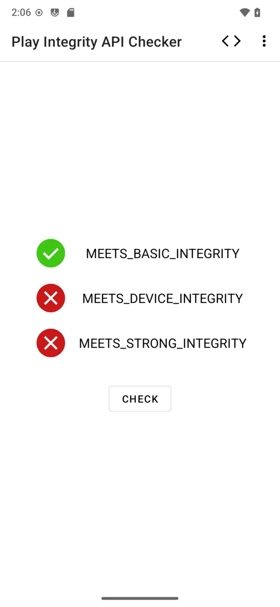

microG 快问快答：替换谷歌框架前，你该知道的六件事
microG 是什么、能替代原版到什么程度、Play Integrity 能过几档、哪些 ROM 开箱支持——一篇问答带你理清楚。
整理一篇关于 microG 的快问快答。如果你正在考虑换掉手机上那套谷歌全家桶，或者已经在自定义 ROM 里打转但应用总罢工，这六个问题大概率就是你心里想问的。
microG 到底是什么？为什么有人要用它？
microG 是谷歌 Play Services 的一个开源替代品，它的核心目标是让依赖谷歌框架的应用能继续跑起来，同时尽量少向谷歌发送数据。官方 Play Services 是装了就全量工作的黑盒——推送、定位、设备注册、广告 ID，所有连接同时开启；microG 把每一项服务拆成独立开关，不需要推送就关掉云消息，不登录账号就连账号相关请求都不会发生。用一句话概括，正如它的microG官网所说：它给你的是一张可勾选的清单，而不是一个必须全盘接受的捆绑包。
谁适合装 microG？有没有不适合的人？
如果你刷了 LineageOS 之类的自定义 ROM，不想装完整版谷歌全家桶但又离不开某些应用，microG 就是为你准备的。隐私敏感用户、想精简系统后台的玩家、常年在 GSI 和第三方 ROM 之间切换的折腾党，都是它的典型用户。但有一类人要格外注意：如果你的主力应用是银行类或支付类、且这些应用强制要求 MEETS_DEVICE_INTEGRITY 或 MEETS_STRONG_INTEGRITY 档的设备完整性证明，microG 路线在这套自定义环境上的天花板就是基础档，强装只会让应用启动就报错。在动手前先确认一下你常用的那几个关键应用能不能在自定义环境里跑，这是最稳的做法。

怎么装？需要什么前提条件？
最省心的方式是选一台预装了 microG 的系统——LineageOS for microG、CalyxOS、/e/OS、iodéOS 这四款都是开箱即用，刷完 ROM 就有，不用额外折腾。如果你的设备在 ArrowOS、crDroid 这些 ROM 的支持列表里，首次启动 microG 时会弹窗请求伪装授权，点同意就行。拿不准的话，直接查所用 ROM 的发布说明，看有没有包含 signature spoofing 补丁。不在清单里也不代表装不了，想手动装的话从官方下载拿安装包就行，社区还有 Xposed 模块和补丁工具两条备选路线，但那种方式出了问题排障成本高很多，能走预装就别走补丁。
microG 全家桶有哪些组件？每个是干什么的？
三个 APK 构成核心套件。microG Services 是必装项，包名就是 com.google.android.gms，它提供了绝大多数谷歌 API 的实现，相当于整套框架的心脏。microG Companion 是推荐安装的辅助应用，它占用了 Play 商店的包名但本身不是商店——它的职责是让那些"检查正版授权""依赖商店组件"的应用调用有地方落地，想真正下载应用得搭配 Aurora Store 这类开源客户端。Services Framework Proxy 只有个别依赖远古 C2DM 推送协议的应用才用得上，绝大多数现代应用走 FCM，装不装无感。另外要注意的是，UnifiedNlp 网络定位和 DroidGuard 设备验证这两块早年是独立应用，如今已经内置进 microG Services，之前单独装过旧版的可以放心卸载。

Play Integrity 校验是什么？装了 microG 能过吗？
Play Integrity 是谷歌给安卓设备做的一套"体检"，应用可以随时向谷歌发问"这台设备可信吗"，银行、支付、流媒体应用把它当启动门槛。三档判定里，MEETS_BASIC_INTEGRITY 只要求设备未被明显篡改，microG 在多数环境下可以过这一档；但 MEETS_DEVICE_INTEGRITY 和 MEETS_STRONG_INTEGRITY 要求设备持有谷歌认证的硬件证书，这是软件层面无解的硬门槛——不是 microG 的缺陷，任何自定义环境都一样。社区长期共识：microG 路线的天花板就是基础档。最实用的建议是装 microG 前后各跑一次验证工具，具体操作方法和结果判读可以翻microG文档，先搞清楚你的设备在官方系统下能过几档，再决定要不要上自定义环境。
microG 的隐私设计具体做了什么？
三个层面。第一是开关制：每个对外连接都能独立开关，关掉对应开关连接随之停止。第二是标识符剥离：官方框架向谷歌发请求时通常携带 MAC 地址、IMEI 等硬件标识，microG 在这些请求里剥掉真实标识，需要时用随机但格式合法的值顶替。第三是广告 ID 直接禁用，以 CalyxOS 文档为例，谷歌广告 ID 被完全停用。项目 Wiki 列出了全部会触达的谷歌域名及其触发条件，FSFE 安全研究组织在 2025 年末对 LineageOS 23 上的 microG 做过网络层审查，确认设备注册请求会发送包含机型与系统指纹的数据，microG 的做法就是在这类请求中移除真实硬件标识。它不假装"零谷歌连接"，但每一条连接你都能看得见、关得掉。
和原版 Play Services 比，有什么坑要提前知道？
最头疼的那个就是完整性校验的天花板问题——上不了 Device 档和 Strong 档不是 bug，是整个自定义环境的生态边界，别在这上面死磕。第二个是组件版本要跟 ROM 同步，Services 装错版本会导致推送或定位异常，建议优先用 ROM 维护者推荐的构建。第三个是某些应用会检测到框架不是原版然后弹警告或功能受限，这种情况社区有 Xposed 模块可以绕，但不是每款应用都有效。好处也很明确：后台活跃连接少了一大截、开机自启项少了、定位请求不会偷偷往外发，整个系统的能耗和隐私暴露面都降了。
最后一句：如果你能接受银行类应用的局限性，microG 是目前自定义 ROM 上替代谷歌框架最靠谱的路线；如果你的主力应用里有强依赖高级完整性校验的，别硬上，先确认兼容性再动手。想看更完整的文档和配置示例的话，这套资料在 GitHub、Gitee、GitCode 三个地方都同步了，国内走 Gitee 或 GitCode 会快一些。